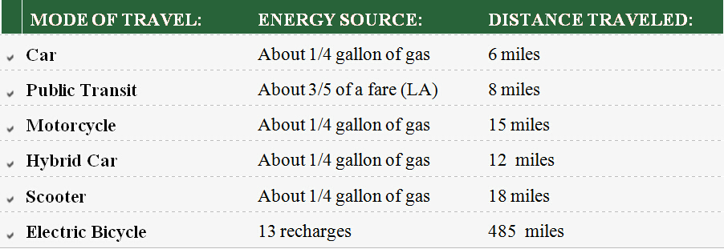

Faster Travel than a car in Urban city's
In theory a car can average a high speed, but in practice speed often falls below 10mph in cities. The problem is congestion - motorcycles get around this to some extent, but they're still confined to the road network. An electric bike can maintain a higher average speed than a bicycle but take advantage of the same network of cycle facilities, giving access to routes that cars and motorcycles cannot reach. The result is often a faster door-to-door journey time than any other mode. And by taking advantage of the uncongested cycle network, but eliminating hills and headwinds, electric bikes are often the most consistent mode of travel.
How far does 99 pennies get you comparison and best reason to buy an E-bike?

Almost 500 miles for less than a Dollar That's right – with an average charge costing just 6 cents and giving you up to 48 miles of electric-assisted riding, you can go for almost 500 miles!
OTHER GREAT REASONS
No Insurance, registration or license needed, Really?
Yes its true, an electric bikes requires no expensive insurance, no registration, and no license of any type. No ongoing expenses other than electricity costs, it instantly reduces your transportation expenses. Add a basket makes shopping trips a fun!
Commuting or errands without getting worn out or breaking a sweat?
An electric bicycle is a great way to commute to work and you don't arrive exhausted or in need of a shower. With two options – pedal-assist and throttle-only – you can control exactly how much or little you want to pedal as you ride. If you're looking for more of a workout, simply turn off the motor and pedal completely on your own as you choose.Electric bikes make any sort of errand easy and quick. Take your child to school. Pick up groceries. Optional rack and bike trailer provide all the carrying power you need.
E-bike Riders get more exercise and fit than regular bike riders, Really?
Surely a conventional bike will keep you fitter? That, of course, depends how much - if at all - you use it. Research has found that 46% of conventional bikes are used only once or twice a week, with a further 30% being used once a month or even less. By contrast, a recent survey of 600 electric bicycle owners reveals that a third ride their bike at least once a day and 81% use the bike at least once a week. The figures confirm our experience that an electric bike typically gets used at least twice as often as a conventional bike! In fact in Europe where there is a mature market, many study's have proven you will actually get in better shape, lose weight and ride more often, why? Because the fear of distance, sweating for commuting, leg power or age factor disappear with a PlugnGo E-bike.
So you want to ride a bicycle more often but worried about hills or going to far?
With electric power, terrain and distance are no longer an issue. The hills are simply 'smoothed' out, it's the closest you can get to feeling like Lance Armstrong. You can still pedal if you choose for as long as you want and then use either pedal-assist or full-throttle model to continue if you get tired or a particularly challenging hill appears. A single charge will provide you with about a 40-mile range in pedal assist, so you never have to worry about running out of energy far away from home. That may sound obvious, but it's the primary advantage. A good electric bike effectively flattens hills, increasing your average speed and eliminating the 'groan' factor when a gradient comes into view. Provided you supply a reasonable amount of effort, you can expect to climb hills of 1 in 10 (10%) on an electric bike with ease, and clear a maximum gradient of 1 in 7 (14%), or much more. In hilly country, the effect is nothing short of miraculous.
Do you want to ride more with your significant other, kids but have a hard time keeping up?
Electric bicycles are a great equalizer when different members of the family have different strength and energy. You no longer have to worry about keeping up but can simply focus on bonding and the togetherness experience while spending quality time together. They also make pulling a young child bike trailer a breeze, talk about being the coolest mom or dad ever.
Tired of high gas prices, car&insurance payments,Annual registration/smog fee's and 'oh yeah' cost of parking, click on?
An electric bike can be a great alternative for your primary or second car. If your typical car ride is under 12 miles, you can easily get to the same place just as quickly (if not quicker, depending on traffic) on an electric bike. Parking is easiest thing in the world, remember to buy a good lock!
Electric Bikes are unusually Safe, Really?
It sounds unlikely, doesn't it? But the mathematics is compelling. Think of a steep and busy road, with cars climbing at 30mph. If you previously slogged up the hill at 6mph, but can tackle the same gradient at 12mph with an electric bike, you will see 33% fewer cars, and they will pass you at 18mph rather than 24mph. Or at least, we think that's correct. Whatever the figures, there's no doubt that an electric bike helps to keep you out of danger. The same general principle applies to road junctions - the faster your acceleration, the sooner you can get out of trouble. And with no need to rush the hills, you won't be tempted to ride downhill at breakneck speed... another useful safety feature.
Better for your wallet, better for the Planet!
Electric bikes obviously consume energy, where a conventional bikes does not (provided we ignore the environmental cost of growing and processing food - see below). However, the amount of energy used is very small compared to a moped, motorcycle or car. Besides fuel, the only consumables are the batteries, and these can normally be recycled when life-expired. As for energy use, electric bikes typically consume fuel at an average rate of 100 to 150 watts of electrical energy, against 15,000 or so for a car (admittedly travelling faster, out of town at least). If it's hard to place these numbers in your own lifestyle, think of a 100 watt electric light bulb burning for an evening - that's enough energy to propel an electrically-assisted bike for 20 to 40 miles...